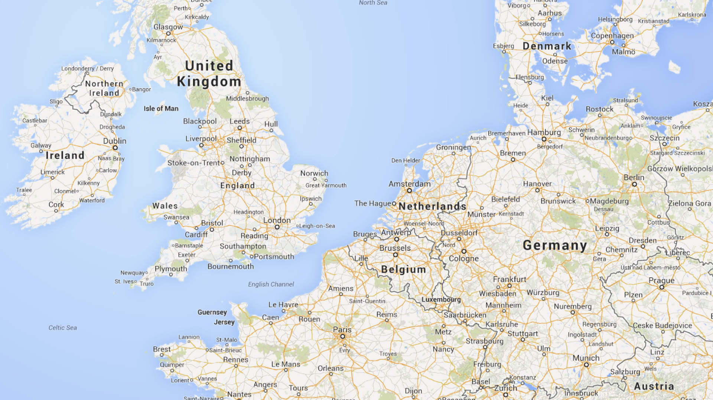
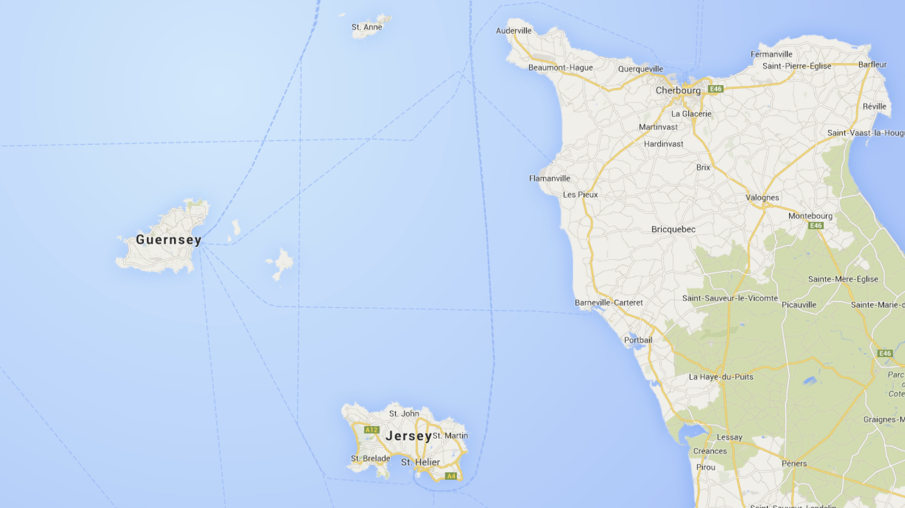
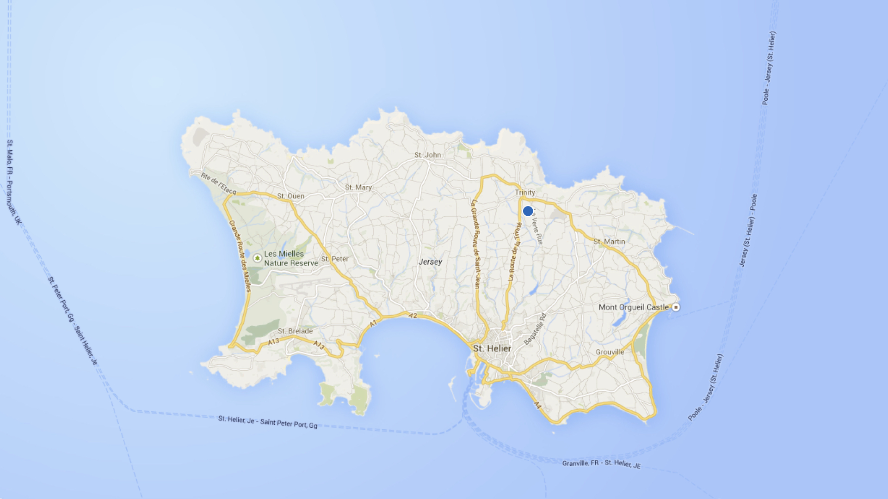
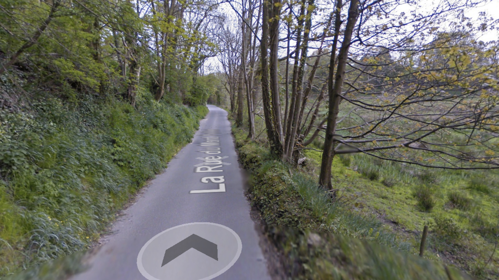
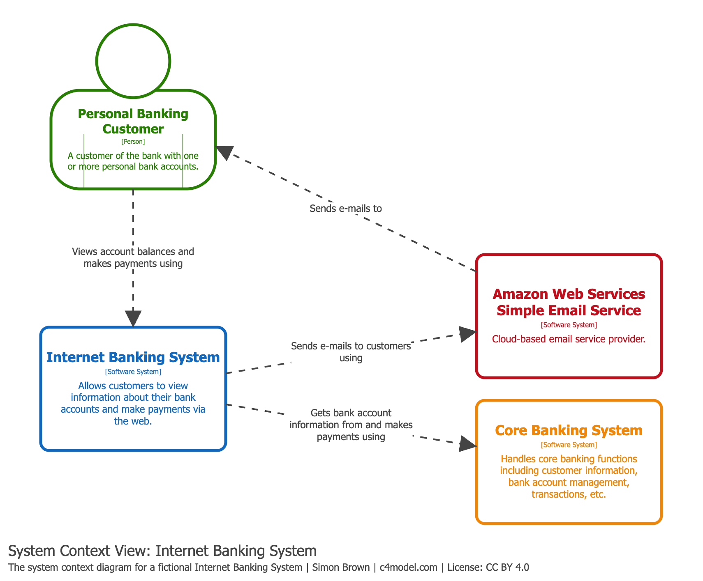
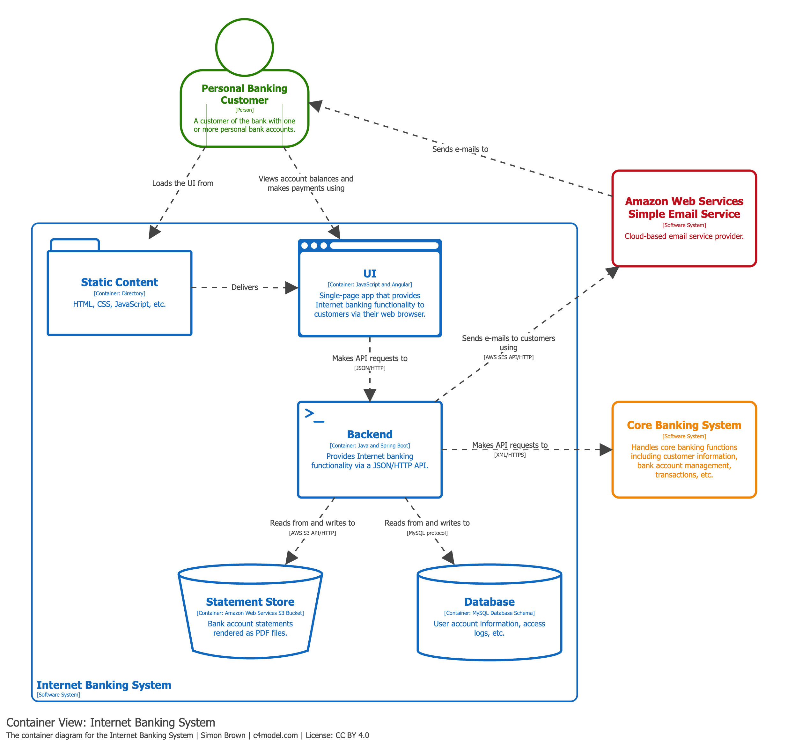
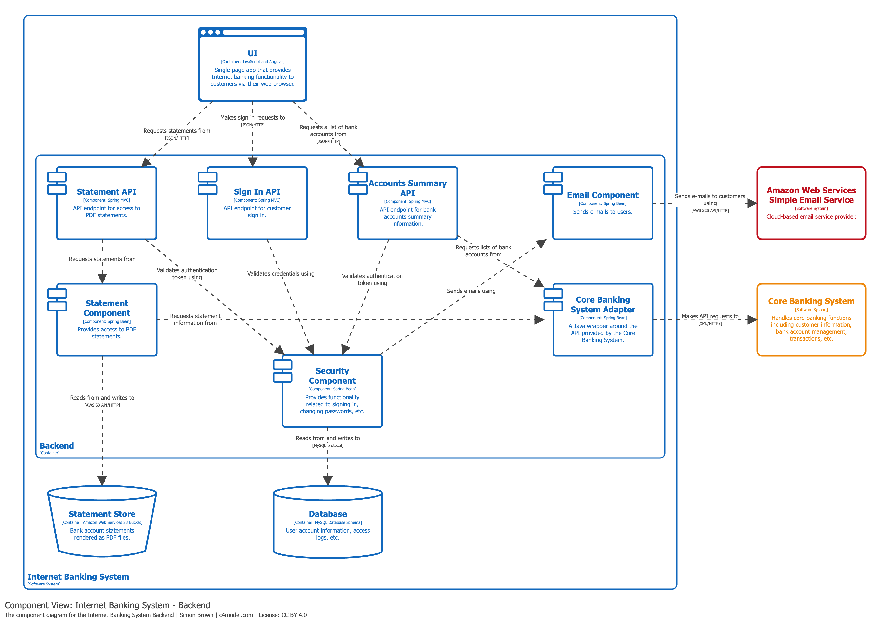
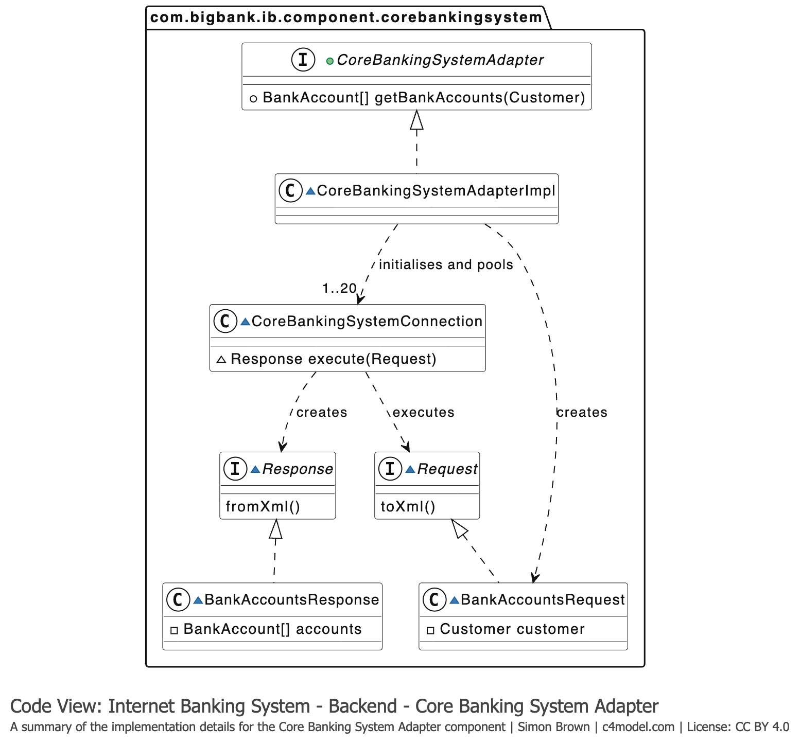

Introduction
Ask somebody in the building industry to visually communicate the architecture of a building and you’ll be presented with site plans, floor plans, elevation views, cross-section views and detail drawings. In contrast, ask a software developer to communicate the software architecture of a software system using diagrams and you’ll likely get a confused mess of boxes and lines.
Common diagramming problems
Common problems with such ad hoc diagrams include:
- Notation (e.g. colour coding, shapes, element sizes, line styles, etc) is not explained or is inconsistent.
- The purpose and meaning of elements is ambiguous.
- Relationships between elements are missing.
- Relationships between elements are unlabelled.
- Generic terms such as “business logic” are used.
- Acronyms and abbreviations are not explained.
- Technology choices are missing.
- Levels of abstraction are mixed.
Furthermore, the problems associated with a single diagram are often exacerbated when a collection of diagrams is created:
- The notation (shapes, colour coding, line styles, etc) is not consistent between diagrams.
- The naming of elements is not consistent between diagrams.
- The logical order in which to read the diagrams isn’t clear.
- There is no clear transition between one diagram and the next.


As an industry, we do have the Unified Modeling Language (UML), ArchiMate and SysML, but asking whether these provide an effective way to communicate software architecture is often irrelevant because many teams have already thrown them out in favour of much simpler “boxes and lines” diagrams. Abandoning these modelling languages is one thing but, perhaps in the race for agility, many software development teams have lost the ability to communicate visually.
Maps of your code
The C4 model was created as a way to help software development teams describe and communicate software architecture, both during up-front design sessions and when retrospectively documenting an existing codebase. It’s a way to create “maps of your code”, at various levels of detail, in the same way you would use something like Google Maps to zoom in and out of an area you are interested in.
 |
 |
 |
 |
 |
 |
 |
 |
| A system context diagram provides a starting point, showing how the software system in scope fits into the world around it. | A container diagram zooms into the software system in scope, showing the applications and data stores inside it. | A component diagram zooms into an individual container, showing the components inside it. | A code diagram (e.g. UML class) can be used to zoom into an individual component, showing how that component is implemented at the code level. |


Uses and benefits
Good software architecture diagrams assist with communication inside and outside of software development/product teams, efficient onboarding of new staff, architecture reviews/evaluations, risk identification (e.g. risk-storming), threat modelling, etc. The goal of the C4 model is to raise the level of maturity associated with software architecture diagrams.